Regular Language and Automata¶
2.1 Deterministic Finite Automata¶
Difinition
deterministic finite automata(DFA) 是一个五元组 \((K,\Sigma,\delta,s,F)\)，满足：
- \(K\) 是一个状态的有限集合
- \(\Sigma\) 是一个字母表
- \(s\in K\) 是最初状态
- \(F\subseteq K\) 是集合的最终状态
- \(\delta\): 转移函数 \(K\times \Sigma\rightarrow K\)
- Graphical Representation
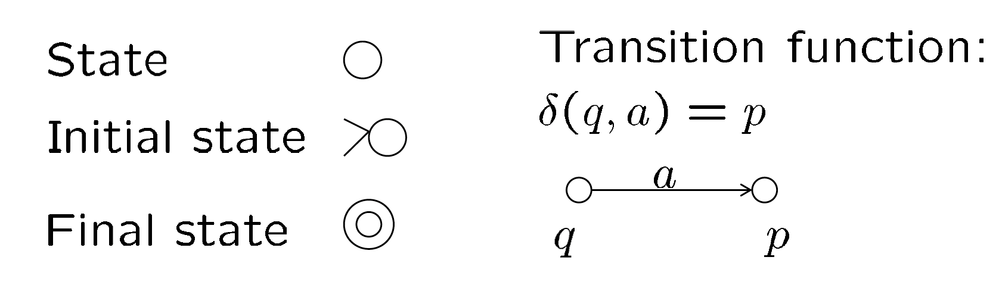
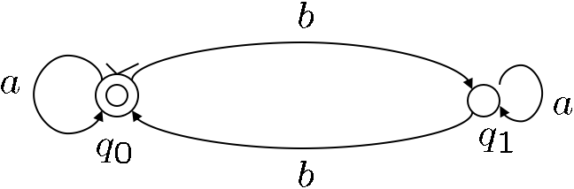
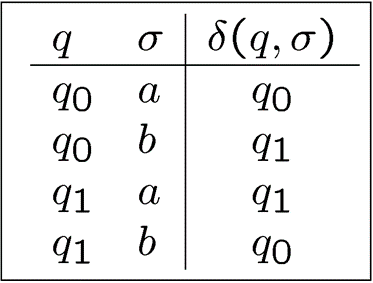
Definition
DFA \(（K,\Sigma,\delta,s,F)\) 的一个 configuration 有 \(K\times \Sigma^*\) 的形式，表示从当前状态 \(K\) 开始经过 \(\Sigma^*\) 所表示的多个操作。
两个configuration之间的二元关系 \(\vdash_M\) 满足：
- \((q,w)\vdash_M(q',w') \Leftrightarrow \exists a\in\Sigma,w=aw',\text{and }\delta(q,a)=q'\)
Example: \((n,WSSW)\vdash_M(i,SSW)\vdash_M(n,SW)\vdash_M(u,W)\vdash_M(n,\epsilon)\)
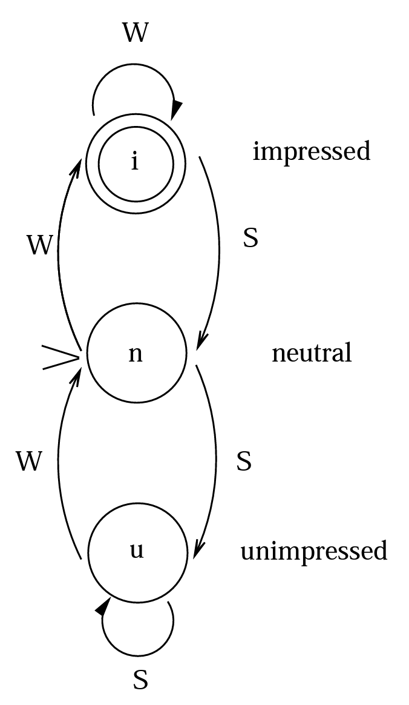
Note
\(\vdash_M^*\) 是 \(\vdash_M\) 关于 reflexive, transitive 的 closure。 - \((q,w)\vdash_M^*(q',w')\) 表示 \((q,w)\) 经过若干步之后会到达 \((q',w')\)
2.2 Nondeterministic Finite Automata¶
Difinition
Nondeterministic finite automata(NFA) 是一个五元组 \((K,\Sigma,\delta,s,F)\)，满足：
- \(K\) 是一个状态的有限集合
- \(\Sigma\) 是一个字母表
- \(s\in K\) 是最初状态
- \(F\subseteq K\) 是集合的最终状态
- \(\Delta\): 转移关系，是 \(K\times (\Sigma\cup\{e\})\times K\) 的子集
Supplyment
NDF和DFA的主要区别为：1. DFA的转移关系必须是一个函数: \(K\times\Sigma\rightarrow K\) ，NFA的转移关系可以不是函数: \(K\times(\Sigma\cup\{e\})\times K\) 。2. DFA转移关系的domain为 \(K\times\Sigma\)，而NFA的是 \(K\times(\Sigma\cup\{e\})\) ，即允许空字符 \(e\) 。
\(\vdash_M^*\) 是 \(\vdash_M\) 关于 reflexive, transitive 的 closure，仍满足。
一个字符串 \(w\in\Sigma^*\) 被 \(M\) accept 当且仅当存在一个状态 \(q\in F\) 满足 \((s,w)\vdash_M^*(q,\epsilon)\)
- \(L(M)\) 是所有被 \(M\) 接受的字符串构成的集合。
Theorem
对于一个NFA \(M\)的语言 \(L=L(M)\)，存在一个DFA \(M'\) 满足 \(L=L(M')\)
Proof¶
对于一个给定的 NFA: \(M=\{K,\Sigma,\Delta,s,F\}\)，构造一个 DFA: \(M'=\{K',\Sigma,\delta,s',F,\}\)，其中
- \(K'=2^K\)
- \(s'=E(s)\)
- \(F'=\{Q|Q\subseteq K,Q\cap F\neq \phi\}\)
- 对于每一个 \(Q\subseteq K\) ，以及 \(a\in \Sigma\)，取 \(\delta(Q,a)=\cup\{E(p)|p\in K \text{ and }(q,a,p)\in \Delta \text{ for some } q\in Q\}\)
Claim
对于任意字符串 \(w\in \Sigma^*\) 和任意状态 \(p,q\in K\) ，存在一个包含 \(p\) 的集合 \(P\)，使得 \((q,w)\vdash^*_M(p,e)\Leftrightarrow (E(q),w)\vdash^*_{M'}(P,e)\)
定义 \(E(q)\) 为状态 \(q\) 可以在没有任何输入的情况下可以到达的所有状态的集合，即
则对于所有字符串 \(w\in\Sigma^*\)
即只需证明 Claim 正确，即可证明 Theorem 正确。
接下来使用归纳法来证明 Claim：
- Basic Step
当 \(|w|=0\) 即 \(w=e\) 时，只需证存在 \(P\) 满足 \((q,e)\vdash^*_M(p,e)\Leftrightarrow (E(q),e)\vdash^*_{M'}(P,e)\)
此时显然满足 \(p\in E(q)\) ，则只需取 \(P=E(q)\) 即可达成。
- Induction Hypothesis
假设对于所有满足 \(|w|\leq k\) 的字符串，Claim 都成立。
- Induction Step
取 \(|w|=k+1,w=va\)，满足 \(a\in \Sigma,v\in \Sigma^*\)
先证 \(\Rightarrow\) ，即存在 \(P\) 满足 \((q,va)\vdash^*_M(p,e)\Rightarrow (E(q),va)\vdash^*_{M'}(P,e)\)
根据 Induction Hypotheses, (其中 \(r_1\in R_1\) )
根据构造的 \(\delta\) 的定义，有
由 \((r_2,e)\vdash_{M'}^* (p,e)\) 易知 \(p\in E(r_2) \Rightarrow p\in P\)，则
\(\Rightarrow\) 证明完毕，接下来证明 \(\Leftarrow\) ，即 \((q,va)\vdash^*_M(p,e)\Leftarrow (E(q),va)\vdash^*_{M'}(P,e)\)
则根据 \(M'\) 的定义，\((R_1,a)\vdash^*_{M'}(P,e)\Rightarrow P=\delta(R_1,a)\)，又有
则 \(p\in P\Rightarrow \exists r_2\) 满足 \(p\in E(r_2)\) 且\(\exists r_1\in R_1, (r_1,a,r_2)\in \Delta\)
根据 \(E(r_2)\) 的定义可得 \((r_2,e)\vdash^*_M (p,e)\)
又根据 Inductino Hypotheses，\((q,va)\vdash^*_M(r_1,a)\)，则
证明完毕。
Example¶
Remark
以上证明提供了从NFA构造DFA的实际算法。构造出的信DFA在规模上是NFA的指数级。
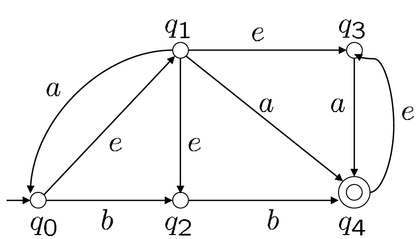
根据上图的的NFA，首先可以得到 \(s'=E(q_0)=\{q_0,q_1,q_2,q_3\}\) ，然后得出转移关系：
于是可以得出等价的DFA为
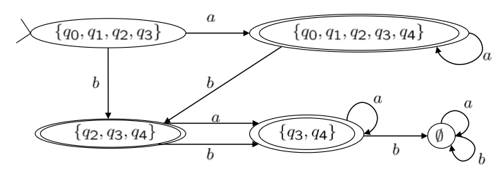
2.3 FA & Regular Expression¶
Theorem
一个语言 \(L\) 是正则的当且仅当它可以被一个有限状态机 \(M\) 接受。
Regular Expression -> FA¶
对于单个字符的正则表达式，一定可以被 FA 接受。
Union¶
如果两个正则表达式分别可以被两个NFA \(M_i=（K_i,\Sigma,\Delta_i,s_i,F_i)(i=1,2)\) 接受，则可以对于构造一个NFA \(M=(K,\Sigma,\Delta, s,F)\) ：\(L(M)=L(M_1)\cup L(M_2)\) ，满足：
- \(K=K_1\cup K_2 \cup {s}\)
- \(F=F_1\cup F_2\)
- \(\Delta=\Delta_1\cup\Delta_2\cup\{(s,e,s_1),(s,e,s_2)\}\)
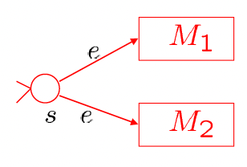
Concatenation¶
构造 \(L(M)=L(M_1)\circ L(M_2)\)，满足：
- \(K=K_1\cup K_2\)
- \(F=F_2\)
- \(\Delta=\Delta_1\cup\Delta_2\cup\{(q_i,e,s_2):q_i\in F_1\}\)
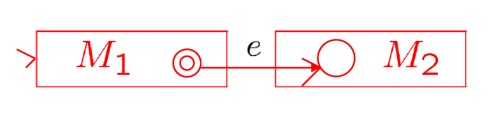
Kleene Star¶
构造 \(L(M)=L(M_1)^*\)，满足
- \(K=K_1\cup\{s_1'\}\)
- \(F=F_1\cup\{s_1'\}\)
- \(\Delta=\Delta_1\cup\{(s_1',e,s_1)\}\cup\{(q,e,s_1):q\in F_1\}\)
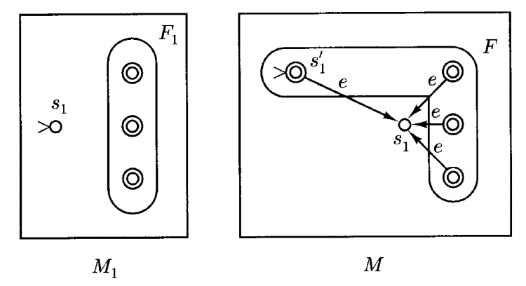
Note
引入新状态 \(s_1'\) 来处理 Kleene Star 满足空字符的情况。
根据以上三种方式可以说明根据正则表达式可以构造出对应的NFA。下面介绍另外两种在 DFA 下的操作的对应转换。
Complementation¶
Note
这里的 \(M_1\) 是 DFA，下同。
构造 \(L(M)=\overline{L(M_1)}=\Sigma^*-L(M_1)\)，满足：
- \(K=K_1\)
- \(s=s_1\)
- \(F=K-F_1\)
- \(\delta=\delta_1\)
Intersection¶
构造 \(L(M)=L(M_1)\cap L(M_2)=\Sigma^*-(\Sigma^*-L(M_1))\cup(\Sigma^*-L(M_2))\)，满足：
- \(K=K_1\times K_2\)
- \(s=(s_1,s_2)\)
- \(F=F_1\times F_2\)
- \(\delta=K\times\Sigma\rightarrow K,\delta((q_1,q_2),a)=(\delta_1(q_1,a),\delta_2(q_2,a))\)
FA -> Regular Expression¶
定义广义状态机(genetalized finite automaton): \(M_G=(K_G,\Sigma_G,\Delta_G,s_G,F_G)\) 由一个NFA: \(M=(K,\Sigma,\Delta, s,F)\) 生成，满足：
- \(M_G\) 有唯一的最终状态。
- \(\Sigma_G=\Sigma\cup R_0\) ，其中 \(R_0\) 是 \(\Sigma\) 上的正则表达式构成的集合 \(R\) 的子集。
- 转移关系：\(\Delta_G\subseteq K\times(\Sigma\cup\{e\}\cup R)\times K\)
- 没有状态可以进入初始状态或离开最终状态
可以通过给一个DFA或NFA增加一个初始状态和一个最终状态，并使用 \(e\) 指向和指出原来的初始状态和最终状态来实现转换。
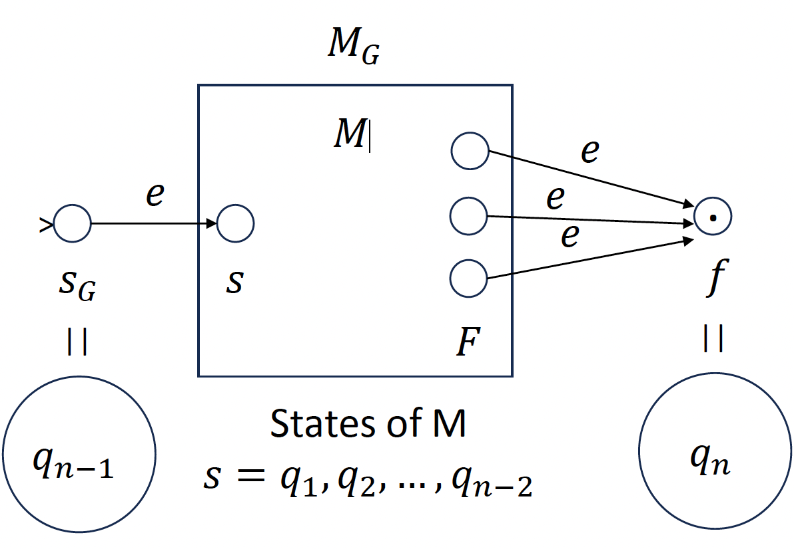
通过依次消除中间状态最终可以得到一个正则表达式。
Example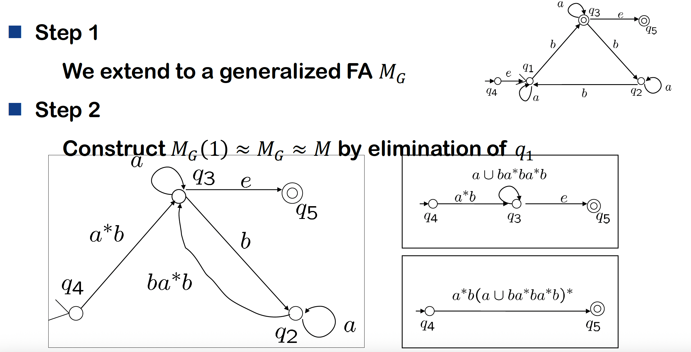¶
Definition
\(R(i,j,k)=\{w\in\Sigma^*;(q_i,w)\vdash^*_{M,k}*(q_j,e)\},i,j=1,2,3,…,n,k=0,1,2,…,n\) 表示所有 \(q_i\) 不经过下标大于 \(k\) 的状态可以到达 \(q_j\) 的路径。
根据这个定义可以得到 \(L(M)=\cup\{R(1,j,n):q_j\in F,q_1=s\}\)
要证明 \(L(M)\) 是正则的，只需证所有 \(R(i,j,k)\) 是正则的。
-
Base case: \(k=0\)，则 \(R(i,j,0)\left\{\begin{array}{ll} \{a|\delta(q_i,a)=q_j\} &i\neq j\\ \{a|\delta(q_i,a)=q_j\}\cup\{e\} &i= j \end{array}\right.\)
-
Induction step: \(R(i,j,k)=R(i,j,k-1)\cup R(i,k,k-1)\cup R(k,k,k-1)^*\cup R(k,j,k-1)\)
2.4 Languages that are and are not regular¶
Note
正则表达式关于Union, intersection, complementation, concatenation, Kleene star操作封闭。
直观理解：FA只有有限个状态，并对这些状态进行重复。即满足FA必须要使状态可以在有限大的内存里保存下来。
Pumping Theorem
如果 \(L\) 是一个正则语言，则存在一个整数 \(n\geq 1\) 使得对于所有满足 \(|w|\geq n\) 的 \(w\in L\)，都可以被写成 \(w=xyz\) 满足：
- \(y\neq e\)
- \(|xy|\leq n\)
- 对于所有 \(i\geq 0\) 满足 \(xy^iz\in L\)
Proof¶
如果 \(L\) 是一个被 DFA \(M\) 接受的正则语言，\(M\) 有 \(n\) 个状态，则对于 \(|w|\geq n\)，考虑前 \(n\) 步，即 $$ (q_0,a_1\cdot\cdot\cdot a_n)\vdash_M(q_1,a_2\cdot\cdot\cdot a_n)\vdash_M\cdot\cdot\cdot\vdash_M(q_n,e) $$ 根据鸽笼原理，其中必然存在 \(0\leq i< j\leq n\)，使得 \(q_i=q_j\)
则区 \(y=a_i\cdot\cdot\cdot a_j,x=a_1\cdot\cdot\cdot a_{i-1},z=a_{j+1}\cdot\cdot\cdot a_n\)
Usage¶
通常使用反证法，先假定 \(L\) 是正则的，存在一个 \(n\)。
然后找出一个 \(w\) 满足 \(|w|>n\)，使得无论如何拆分成 \(w=xyz\) 都会存在 \(xy^iz\notin L\) 。
则可以说明 \(L\) 不是正则的。